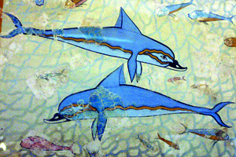
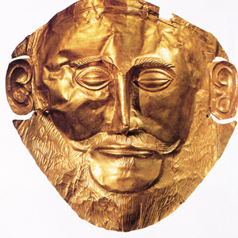

Lezione 3  Il mondo greco
Il mondo greco

-
290
480
-
180
380
-
240
470
-
120
550

CNOSSO
La vivacità cromatica e il festoso naturalismo dell’affresco con i delfini, che adorna l’appartamento detto “della Regina”, nel palazzo di Cnosso, danno la misura della raffinatezza cui giunge l’arte cretese. L’apogeo della civiltà cretese si raggiunge nella prima metà del II millennio a.C.; il periodo è detto Minoico Medio o periodo del palazzo. Il palazzo di Cnosso era forse il più imponente: si trattava di un complesso maestoso, in cui sono stati ritrovati anche dipinti, statue, vasi e tombe. Altri siti importanti sono Festo e Mallia.
MICENE
Tradizionalmente si è voluto identificare il personaggio ritratto in questa maschera funeraria micenea in oro sbalzato con il mitico re Agamennone. Gli indoeuropei scendono in Grecia a ondate successive, prima gli ioni e gli eoli, poi gli achei, che occupano il Peloponneso. Questi ultimi sono detti micenei da Micene, una delle più importanti città achee, di solito costruite come fortezze cinte da mura e situate in luoghi facilmente difendibili.SANTORINI
Si ritiene che sia stata l’eruzione del vulcano dell’isola di Thera, oggi Santorini, a causare una prima distruzione dei palazzi cretesi; cominciò allora un rapido declino che si concluse quando i micenei conquistarono Creta.TROIA
Gli achei si devono scontrare oltre che con Creta, anche con la città di Troia, posta in posizione strategica all’entrata dell’Ellesponto. E’ probabile che tra le parti avverse ci sia stato non uno ma numerosi conflitti; la distruzione di Troia sarebbe da datare intorno al 1200 a.C.